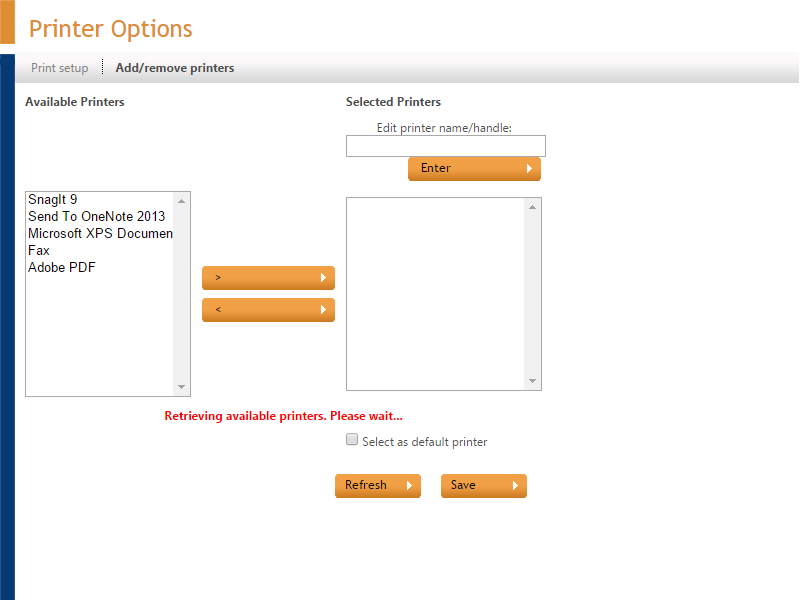
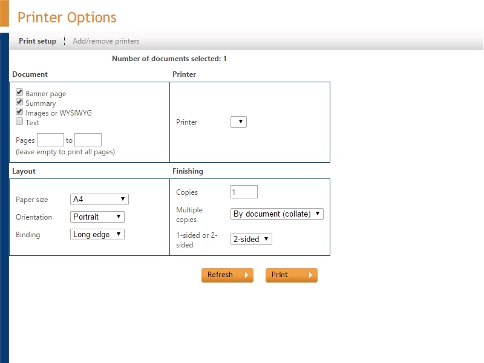

Server Side Printing
Conditions
You want to print a document you have found on a printer connected to the server. You can print it by selecting it from the found documents list, or when you have already opened it. The ZyLAB TIFF Export Printer is installed and the ZyLAB Print Service is running.
Instructions
- If you cannot see the print icon click the Show print button (print server side) on the Global Options (page 146) page.
- To print click on the print icon . The Printer Options window appears.
- If necessary, set-up the printer:
- Click on the Add/remove printers tab.

- From the list of printers, select the printers you want to use for printing. Transfer them to the Selected Printers panel using the > button.
- If you want to give the printer a user-friendly name, select the printer and type the name in the Edit printer name/handle box. Click Enter to change the printer's name.
- Choose a printer to select as the default printer.
- Press Refresh to see your changes.
- Press Save
- Click the Print setup tab to show the print window.

- Press the Refresh button to show all changes you have made to printers.
- In the Printer box, select a printer.
- In the Document, Layout and Finishing boxes choose the required settings.
- Click Print to print the document.
Result
You have printed the (selected) document.